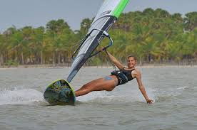
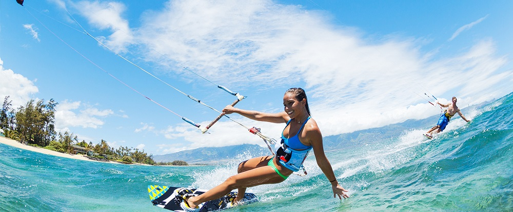

The thrill of kite surfing and water sports in Kalpitiya
Kalpitiya, a coastal paradise nestled in Sri Lanka, is not just a haven for serene beaches and vibrant marine life but also a playground for adrenaline junkies seeking thrilling water sports experiences. Among these, kite surfing stands out as a popular choice, attracting enthusiasts from around the globe. Let's delve into the world of kite surfing and other exciting water sports that make Kalpitiya a must-visit destination for adventure seekers.
Kite Surfing: Riding the Wind and Waves:
Kite surfing, also known as kiteboarding, is a dynamic water sport that combines elements of surfing, windsurfing, and paragliding. Kalpitiya's geographical features, including its flat, shallow lagoons and consistent winds, create ideal conditions for kite surfing throughout the year. The main kite surfing season in Kalpitiya typically runs from May to October, during which the winds are strongest and most consistent, providing ample opportunities for thrilling rides and impressive jumps.
Kite surfing in Kalpitiya caters to all skill levels, from beginners looking to take their first lessons to experienced riders seeking challenging waves and tricks. Several kite surfing schools and rental facilities dot the coastline, offering lessons, equipment rentals, and guided excursions to various kite surfing spots. Whether you're a novice or a seasoned rider, Kalpitiya's welcoming atmosphere and stunning natural beauty provide an unforgettable kite surfing experience.
Other Water Sports Adventures:-
Beyond kite surfing, Kalpitiya offers a diverse range of water sports to satisfy every adventurer's craving for excitement. Here are some of the top water sports activities to try in Kalpitiya:
Windsurfing:

Similar to kite surfing but using a sail instead of a kite, windsurfing in Kalpitiya is a thrilling way to harness the wind's power and glide across the water's surface. Beginners can take lessons to master the basics, while experienced windsurfers can test their skills in the challenging winds of Kalpitiya's lagoons and bays.
Stand-Up Paddleboarding (SUP):
For a more relaxed water activity, SUP offers a serene way to explore Kalpitiya's tranquil waters. Paddle along the coastline, venture into mangrove forests, or try SUP yoga for a unique and peaceful experience on the water.
Snorkeling and Diving: Discover Kalpitiya's underwater wonders by snorkeling or diving in its pristine coral reefs. Encounter vibrant marine life, including colorful fish, sea turtles, and even playful dolphins, making each underwater excursion a memorable adventure.
Kayaking and Canoeing: Explore Kalpitiya's scenic waterways at your own pace with kayaking or canoeing. Navigate mangrove forests, spot diverse bird species, and soak in the tranquility of nature while paddling through Kalpitiya's hidden gems.
Best Time to Enjoy Water Sports in Kalpitiya

While kite surfing enthusiasts flock to Kalpitiya during the windy season from May to October, water sports enthusiasts can enjoy a variety of activities year-round. The period from November to April offers calm seas, ideal for snorkeling, diving, kayaking, and other water adventures. Whether you prefer the thrill of riding the wind or the serenity of exploring underwater realms, Kalpitiya promises unforgettable experiences for water sports enthusiasts of all kinds.
Kalpitiya's blend of natural beauty, favorable weather conditions, and a wide range of water sports opportunities makes it a paradise for adventure seekers. From adrenaline-pumping kite surfing to tranquil snorkeling excursions, Kalpitiya offers something for everyone looking to embrace the thrill of water sports in a stunning coastal setting. Plan your visit to Kalpitiya and dive into a world of endless aquatic adventures that will leave you longing to return for more.
NOTE:-
If you like to kite surfing and water sports,
you can know about the prices and packages
from the hotels mentioned on our home page
and can book.